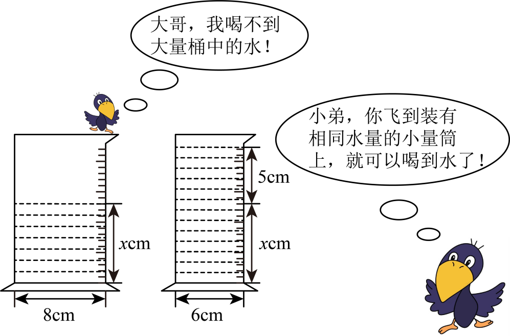

专题5.1 认识方程、一元一次方程的解法（举一反三讲义）
【北师大版2024】

【题型1 （一元一次）方程的概念】 5
【题型2 列方程】 5
【题型3 由（一元一次）方程的解求代数式的值】 6
【题型4 由等式的性质判断变形正误】 6
【题型5 由等式的性质比较大小】 7
【题型6 由两个一元一次方程解之间的关系求字母的值】 8
【题型7 一元一次方程的整数解问题】 8
【题型8 由一元一次方程的解的情况求值】 8
【题型9 错看或错解一元一次方程问题】 9
【题型10 一元一次方程的遮挡问题】 10
【题型11 整体换元求一元一次方程的解】 10
【题型12 解含有绝对值的方程】 11
 知识点1 方程
知识点1 方程
含有未知数的等式叫作方程．
例如：x=0，2x=5，y+3=−5，a2+3a=7，x−2y=10，1x+x=2等都是方程．
知识点2 方程的解与解方程
1. 一般地，使方程左、右两边的值相等的未知数的值，叫作方程的解．例如：x=2是方程2x+1=5的解．
2. 求方程的解的过程，叫作解方程．
知识点3 一元一次方程的概念
1. 一般地，如果方程中只含有一个未知数（元），且含有未知数的式子都是整式，未知数的次数都是1，这样的方程叫作一元一次方程．
例如：x=1，2x−1=x+2，y+5=y2等都是一元一次方程．
2. 一元一次方程的最简形式为x=ba(a≠0)．
3. 一元一次方程的标准形式为ax+b=0(a≠0)．
知识点4 列简单的一元一次方程
列方程就是把实际问题中的等量关系用方程的形式表示出来．列方程的一般步骤如下：
（1）审：仔细审题，弄清题中的已知量、未知量和相等关系；
（2）设：设出恰当的未知数，并把与相等关系有关的量用未知数表示出来；
（3）列：根据题中等量关系列出一元一次方程．
知识点5 等式的性质
性质 | 内容 | 字母表示 | 示例 |
两个基本事实 | 对称性：如果 a=b，那么b=a； 传递性：如果 a=b，b=c，那么a=c | 若 a=2，则2=c，则a=c | |
性质1 | 等式两边加（或减）同一个数（或式子），结果仍相等 | 如果 a=b，那么a±c=b±c | 若 a=b，则x±3=y±3 |
性质2 | 等式两边乘同一个数，或除以同一个不为0的数，结果仍相等 | 如果 a=b，那么ac=bc；如果a=b(c≠0)，那么ac=bc | 若 a=b，则a×3=b×3，a3=b3 |
知识点6 合并同类项与系数化为1
1. 合并同类项
将一元一次方程中含有未知数的项与常数项分别合并，使方程转化为ax=b(a≠0)的形式，变形依据是合并同类项法则．
2. 系数化为1
方程两边同时除以未知数的系数，使一元一次方程ax=b(a≠0)变形为x=ba(a≠0)的形式，变形的依据是等式两边乘同一个数，或除以同一个不为0的数，结果仍相等．例如，解方程：x+2x=6−3，合并同类项，得3x=3，系数化为1，得x=1．
知识点7 移项法解一元一次方程
1. 移项
（1）把等式一边的某项变号后移到另一边，叫作移项．
（2）移项的目的：使含有未知数的项与常数项分别位于方程的两边，以便为下一步合并同类项创造条件．移项的依据是等式两边加（或减）同一个数（或式子），结果仍相等．
（3）移项的方法：通常把方程右边的含未知数的项改变符号后移到方程左边，把方程左边的常数项改变符号后移到方程右边．但也不尽然，比如为使未知数的系数不出现负数，也可以把含未知数的项放在右边，常数项放在左边．例如：−x+1=5，移项，得1−5=x，所以−4=x，即方程的解为x=−4．
2. 移项法解一元一次方程的步骤
（1）移项；
（2）合并同类项；
（3）系数化为1．
例如，解方程：10−4y=6y+5，移项，得−4y−6y=5−10．
合并同类项，得−10y=−5．系数化为1，得y=12．
知识点8 去括号与去分母
1. 去括号
（1）解含有括号的一元一次方程时，利用去括号法则去掉括号．
（2）去括号是为了下一步能用移项法解方程，实质是分配律．
（3）去括号各项的变化：
①如果括号外的因数是正数，去括号后原括号内各项的符号与原来符号相同，例如：+(a−b)=a−b；
②如果括号外的因数是负数，去括号后要改变原括号内各项的符号，例如：−(a−b)=−a+b；
③当括号前不是“+1”或“−1”时，去括号时，将括号外的因数连同前面的符号看成一个整体，按分配律乘括号内的每一项，再把积相加．
（4）去括号解一元一次方程的步骤：
①去括号；②移项；③合并同类项；④系数化为1．
2. 去分母
（1）在含有分数系数的方程两边都乘同一个数（该数为各分母的最小公倍数），使方程中不含分母，这样的变化过程叫作去分母．
（2）去分母的目的是将方程中的分数系数转化为整数，再利用去括号、移项、合并同类项、系数化为1解方程．去分母的依据是等式两边乘同一个数，或除以同一个不为0的数，结果仍相等．
（3）对于含小数的一元一次方程，先将小数化为分数，再利用去分母、去括号、移项、合并同类项、系数化为1解方程．
知识点9 解一元一次方程的步骤
变形名称 | 具体做法 | 变形根据 | 易错点 | 示例 3x+14+x−23=x2+5 |
去分母 | 方程两边乘各分母的最 小公倍数 | 等式两边乘同一个数，或除以同一个不为0的数，结果仍相等 | （1)易漏乘不含分母的项； （2)分子是和、差的形式时，分子容易漏加括号 | 两边同乘12， 3(3x+1)+4(x−2)=6x+60 |
去括号 | 可按“小、中、大”的顺序去括号，也可灵活决定 | （1）分配律； （2）去括号法则 | （1）容易漏乘括号里面的项； （2）容易出现符号错误 | 9x+3+4x−8=6x+60 |
移项 | 把含有未知数的项移到 方程的一边，常 数 项 移 到方 程 的另一边 | 等式两边加（或减）同一个数（或式子），结果仍相等 | 移项容易不变号 | 9x+4x−6x=60−3+8 |
合并同类项 | 把方程化为ax=b(a≠0)的形式 | 合并同类项法则 | 系数相加时容易算错 | 7x=65 |
系数化为1 | 方程两边除以未知数的系数 | 等式两边乘同一个数，或除以同一个不为0的数，结果仍相等 | （1）系数含字母时,容易不先判断系数是否为0而直接两边同时除以系数； （2）容易 把分子、分母颠倒 | x=657 |
知识点10 解含有绝对值的方程
根据“x=a，则x=±a”，将绝对值符号去掉，化为两个一元一次方程，再解这两个方程．例如，解方程：2x+1=3−5x，去绝对值符号，得2x+1=±(3−5x)，即2x+1=3−5x或2x+1=−3+5x，解得x=27或x=43．
【题型1 （一元一次）方程的概念】
【例1】（24-25七年级上·河北邯郸·期中）已知关于x的方程m−1xm−2=0是一元一次方程，则m的值是（ ）
A．3 B．2 C．1 D．1或3
【变式1-1】（24-25七年级下·全国·课后作业）下列各式：①7−8y；②3t2+4t=4；③4+6=10；④2y+1=y−2；⑤3x−1=4；⑥2z>3；⑦48=12，其中 是方程， 是一元一次方程．
【变式1-2】若(m+5)x2+6mx+4m=0是关于x的一元一次方程，则m= ．
【变式1-3】已知下列各式：
①−3x+2y=1；②x=5；③2x +1=3；④4−3=1；⑤x2−x−2=0；⑥3x−2；⑦2x−2=x．
其中方程有 ，一元一次方程有
【题型2 列方程】
【例2】王强参加3000米的长跑，他以8米/秒的速度跑了一段路程后，又以5米秒的速度跑完了其余的路程，一共花了15分钟，他以8米/秒的速度跑了多少米？设以8米/秒的速度跑了x米，列出的方程是（ ）
A．x8+3000−x5=15×60 B．x8+3000−x5=15
C．x8−3000−x5=15×60 D．x8−3000−x5=15
【变式2-1】一个长方形的周长为32cm，若这个长方形的长减少2cm，宽增加3cm就变成了一个正方形，设长方形的长为xcm，可列方程（ ）．
A．x+2=32−x−3 B．x−2=16−x+3
C．x−2=32−x+3 D．x+2=16−x−3
【变式2-2】《儿童算术》中记载了一个问题，大意是：有几个人一起去买一件物品，每人出8钱，多3钱；每人出7钱，少4钱，问人数是多少？ 若设人数为x，则下列方程正确的是（ ）
A．8x+3=7x−4 B．8x−3=7x+4
C．8x−3=7x+4 D．8x+4=7x-3
【变式2-3】根据图中给出的信息，可得正确的方程是（ ）

A．π×(82)2x=π×(62)2×(x+5) B．π×(82)2x=π×(62)2×(x−5)
C．π×82x=π×62×(x+5) D．π×82x=π×62×5
【题型3 由（一元一次）方程的解求代数式的值】
【例3】（24-25七年级下·河北石家庄·开学考试）已知x=2是关于x的方程52x−2a=0的解，则代数式2a−1的值是 ．
【变式3-1】（24-25七年级下·福建泉州·期中）若x=3是关于x的方程3ax−bx=6的解，则40−6a+2b的值是 ．
【变式3-2】若x=3是方程ax+b=4的解，则代数式−35a−b5的值是 ．
【变式3-3】（24-25七年级下·辽宁丹东·开学考试）已知x=−2是关于x的方程2ax−b+5=0的解，则8a+2b+2032= ．
【题型4 由等式的性质判断变形正误】
【例4】下列等式变形错误的是（ ）
A．若a=b，则a1+x2=b1+x2 B．若a=b，则3a=3b
C．若a=b，则ax=bx D．若a=b，则am=bm
【变式4-1】（24-25七年级下·四川遂宁·期末）下列选项正确的是 （ ）
A．若−3x=4，则x=−34
B．若−2x≥4，则x≥−2
C．若a>b，则ac2>bc2
D．若x与5的差是非正数，则用数学符号表示为x−5≤0
【变式4-2】（24-25七年级下·河南南阳·开学考试）下列方程中移项正确的是（ ）
A．由x−3=4，得x=4−3
B．由2=3+x，得2+3=x
C．由3−2x=5+6，得2x−3=5+6
D．由−4x+7=5x+2，得5x+4x=7−2
【变式4-3】（24-25七年级上·山东枣庄·阶段练习）下列变形正确的是（ ）
A．若3x−1=2x+1，则3x+2x=1+1
B．若3x+1−51−x=0，则3x+3−5−5x=0
C．若1−3x−12=x，则2−3x−1=x
D．若x+10.2−x0.3=10，则x+12−x3=1
【题型5 由等式的性质比较大小】
【例5】已知m×65=n÷67（m、n都不为零），比较m、n的大小正确的是（ ）
A．m<n B．m>n C．m≥n D．m≤n
【变式5-1】（24-25七年级上·河南郑州·开学考试）【等量代换】某益智节目有这样一个问题：如图所示，两个天平都平衡，根据图示回答三个球的质量等于 个正方体的质量．
【变式5-2】已知34m−1=34n，试用等式的性质比较m与n的大小为 ．
【变式5-3】若a−b>0，则a>b；若a−b=0，则a=b；若a−b<0，则a<b，这是利用“作差法”比较两个数或两个代数式值的大小．
(1)试比较代数式5m2−4m+2与4m2−4m−7的值之间的大小关系；
(2)已知代数式3a+2b与2a+3b相等，试用等式的性质比较a，b的大小关系．
(3)已知12m−13n−1=12n−13m，试用等式的性质比较m，n的大小关系．
【题型6 由两个一元一次方程解之间的关系求字母的值】
【例6】（24-25七年级下·吉林长春·阶段练习）若关于x的方程3x+2=2x−5的解与方程253x+2=k10+32x−1的解互为相反数，则k的值为 ．
【变式6-1】（24-25七年级下·四川内江·期中）如果2x+6=a的解与−2x+5=4−3x的解相同，则a的值是 ．
【变式6-2】（24-25七年级上·陕西渭南·期中）关于x的方程34+8x=7k+6x的解比关于x的方程k2+x=xk+2（k≠0）的解大6，则k的值为 ．
【变式6-3】（24-25七年级下·重庆·开学考试）已知关于x的方程3x−72=2+2x3的解是关于y的方程2m−3y5=1−3m的解的5倍，则m= ．
【题型7 一元一次方程的整数解问题】
【例7】（24-25七年级下·四川巴中·开学考试）k是一个正整数，关于x的一元一次方程2kx−9=k+2x有正整数解，则k= ．
【变式7-1】关于x的一元一次方程16mx−43=12x−2的解为整数，则整数m的所有可能的取值之和为 ．
【变式7-2】（24-25七年级下·河南南阳·阶段练习）已知关于x的方程x−4−ax6=x+23−12的解是非正整数，则符合条件的所有整数a的和是 ．
【变式7-3】（24-25六年级下·黑龙江大庆·期末）已知关于x的方程x−2−ax6=x3−2有整数解，则满足条件的所有整数a的和为 ．
【题型8 由一元一次方程的解的情况求值】
【例8】若关于x的方程2kx+m3=x−nk6+2，无论k为任何数时，它的解总是x=1，则m−n= ．
【变式8-1】（24-25七年级下·重庆·期中）若关于x的方程m3x+1=−n2+x3有无数个解，则m+n的值为 ．
【变式8-2】（24-25八年级下·上海·期中）如果a≠b，那么关于x的方程a−bx=a+ba−b 的解为x= ．
【变式8-3】（24-25六年级上·上海·阶段练习）已知关于x的方程a2x−1=3x−2无解，则a的值为 ．
【题型9 错看或错解一元一次方程问题】
【例9】（25-26八年级上·重庆万州·开学考试）小玉在解方程2x−13=x+a2−1去分母时，方程右边的“−1”项没有乘6．因而求得的解是x=10，则a= ．
【变式9-1】（24-25六年级下·山东烟台·期中）下面是晓彬同学解一元一次方程的过程，请认真阅读并完成相应任务．
解：3x+12−2=3x−110−2x+35
53x+1−20=3x−1−22x+3 第一步
15x+5−20=3x−1−4x−6 第二步
15x−3x+4x=−1−6+5+20 第三步
16x=18 第四步
x=98 第五步
(1)任务一：①以上步骤第一步是进行去分母，依据是______．
②以上步骤从第______步开始出现了错误，错误的原因是______．
(2)任务二：①请你将正确的解方程过程写在下面；
②除纠正上述错误外，请你根据平时的学习经验，就解一元一次方程还需要注意的事项给其他同学提出一条建议．
【变式9-2】（24-25七年级上·河南商丘·期末）小明在解方程x−22+13=x+a时，误将x+a看成了x−a，解得方程的解是x=4，则原方程的解为 ．
【变式9-3】（24-25七年级上·江西上饶·阶段练习）本学期学习了一元一次方程的解法，下面是小明同学的解题过程：
解方程：2x−0.10.2−x+0.20.3=1．
解：原方程可化为20x−12−10x+23=1，……第一步
方程两边同时乘以6，去分母，得
320x−1−210x+2=6，……第二步
去括号，得60x−3−20x+4=6，……第三步
移项，得60x−20x=6+3−4，……第四步
合并同类项，得40x=5，………第五步
系数化为1，得x=18，……第六步
所以x=18是原方程的解．
上述小明的解题过程从第__________步开始出现错误，错误的原因是__________．
请你写出正确的解题过程．
【题型10 一元一次方程的遮挡问题】
【例10】（24-25七年级上·吉林松原·期中）小明在做解方程作业时，不小心将方程中的一个常数污染了看不清楚，被污染的方程是2y−12=y−▄，怎么办呢？小明想了想便翻看了书后的答案，此方程的解是y=−32他很快就补好了这个常数，这个常数应是 ．
【变式10-1】（24-25七年级上·广东佛山·期末）小明不小心将墨水滴在试卷上，只能看到“解方程：10−▲=4x”，△处被污染看不清．若方程的解是x=3，则▲处的数字是应是 ；
【变式10-2】嘉淇在进行解一元一次方程的练习时，发现有一个方程“3x+7=■−x”中的常数被“■”遮挡．
(1)嘉淇猜想“■”遮挡的常数是1，请你算一算x的值；
(2)老师说此方程的解与方程2x−12=12x+4的解相同，请你算一算“■”遮挡的常数是多少？
【变式10-3】小明解关于x的一元一次方程2x−Δ3−3x−Δ6=1时，有一个数△看不清楚，但小红解得的答案是x=−1，则这个数△为（ ）
A．−7 B．−2 C．0 D．1
【题型11 整体换元求一元一次方程的解】
【例11】已知关于x的方程12024x+3=2x+b的解为x=3，则关于y的一元一次方程−12024y−1+3=−2y−1+b的解为 ．
【变式11-1】（24-25六年级上·上海·期末）定义：如果两个一元一次方程的解的和为1，我们就称这两个方程为“美好方程”．例如：方程2x−1=3和x+1=0为美好方程．若关于x的方程12024x+1=0与12024x−1=3x+k是“美好方程”，则关于y的方程12024(y+3)−1=3y+k+9的解是 ．
【变式11-2】（24-25七年级下·福建泉州·期中）已知关于x的一元一次方程12025x+3=2x+b的解为x=5，那么关于y的一元一次方程120252y+1=4y−1+b的解为 ．
【变式11-3】（24-25七年级上·福建福州·期末）已知关于x的一元一次方程12025x+m=2024x−n的解为x=2025，那么关于y的一元一次方程12025y−2−m=2024y−4048+n的解为y= ．
【题型12 解含有绝对值的方程】
【例12】（24-25七年级下·四川眉山·阶段练习）如果p，q是非零实数，关于x的方程∣∣2024x−2025∣−p∣=−q始终存在四个不同的实数解，则p+q∣p+q∣+p−q∣p−q∣+pq∣pq∣+p∣p∣+q∣q∣的值为 ．
【变式12-1】（24-25七年级下·福建厦门·阶段练习）方程5−3x=3−x的解是 ．
【变式12-2】（24-25七年级下·四川巴中·阶段练习）关于x的方程2x−3=m3+x的解满足x−1=2，则常数m的值为 ．
【变式12-3】解方程：x=3x−2，则x= ．